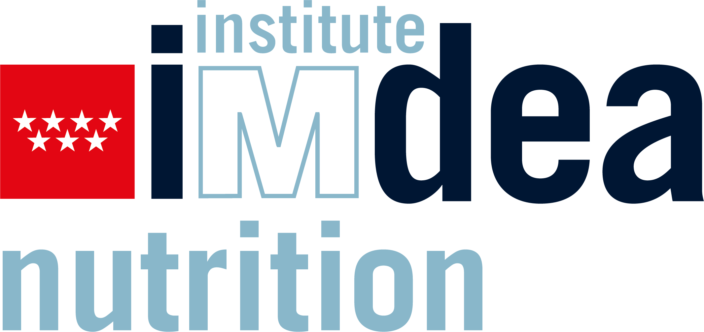
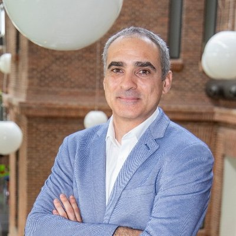
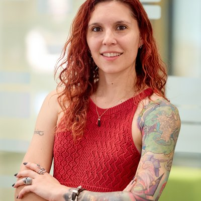
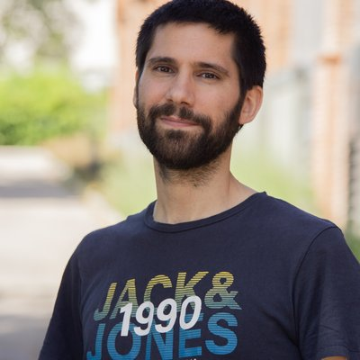
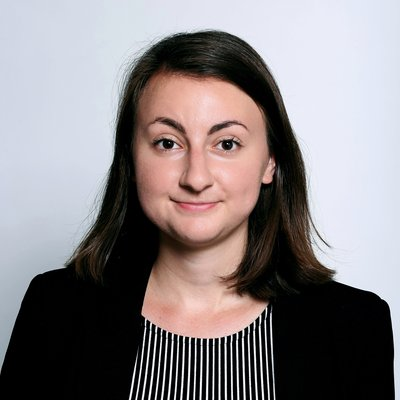
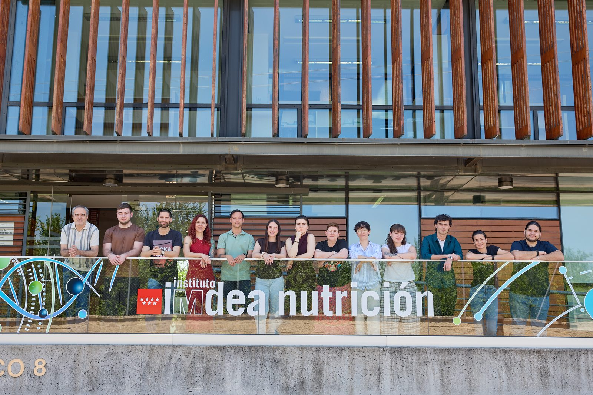
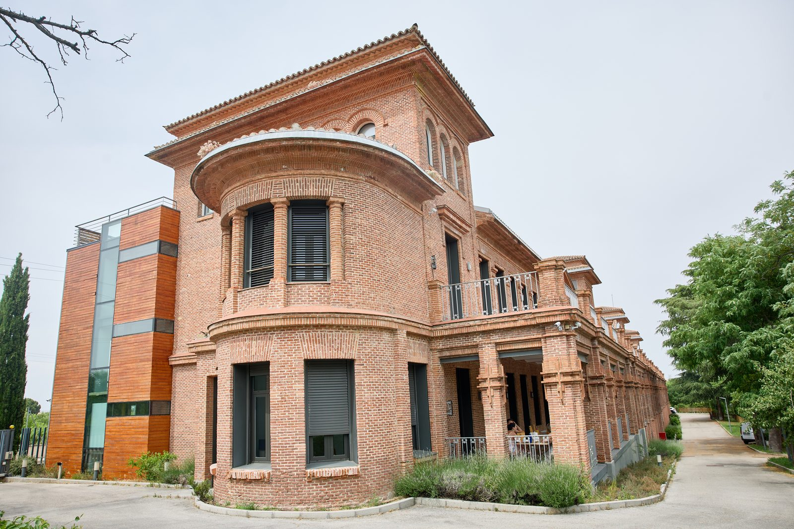

Advances in in vitro gut models, high-throughput sequencing and metabolomics are transforming our understanding of host-microbiome interactions. These technologies generate increasingly complex datasets, creating a growing need for researchers to develop computational skills that enable robust, reproducible and biologically meaningful data analysis.
The Third INFOGUT Training School 2026, organised within the COST Action INFOGUT and the IMDEA Nutrition Institute (Spain), is an intensive three-day programme designed to equip researchers with the fundamental bioinformatics skills required to analyse microbiome and metabolomics data derived from in vitro colon models.
Designed for PhD candidates, postdoctoral researchers and technical staff, the course combines theory with hands-on training in R, Unix/Bash, GitHub, statistical analysis, FAIR data principles and reproducible bioinformatics workflows. No prior programming experience is required.
Beyond technical training, participants will engage with leading international experts, exchange knowledge and establish collaborations within the European INFOGUT research network.
The school is aimed at Early Career Researchers (PhD students and postdocs), but is open to all, and technical personnel are particularly welcome. It focuses on people who are already working with in-vitro colon models, or who are planning to.
| Registration opens | Monday 3 August 2026 |
|---|---|
| Registration closes | Tuesday 25 August 2026 |
| Confirmations sent | Friday 28 August 2026 |
| Training school | 28–30 September 2026 |
Registration is in two steps. Both are required.
Participants whose invitation includes reimbursement are funded by COST Action CA23110. The summary below covers the main points. Full details and the relevant section of the COST Annotated Rules will be sent to selected participants with their invitation.
The daily allowance is a lump sum of €175 per day covering accommodation, meals and short-distance travel (up to 100 km one way). It is calculated as:
| Day you travel to Madrid | 100% |
|---|---|
| Each day attended and signed | 100% |
| Day you travel back | 40% |
| Same-day travel, no overnight stay | 50% |
| Local participants | 50%, optional |
No supporting documents are normally needed for the daily allowance. The exception is if you claim the allowance for travel days without claiming travel costs, in which case you must upload proof of your travel dates such as tickets or hotel invoices.
Long-distance travel means any journey of 101 km or more one way between main transport hubs. Anything shorter is covered by the daily allowance.
Claims are submitted through e-COST as an Online Travel Reimbursement Request (OTRR), and you have 7 calendar days from the end of the school to do so. There are detailed requirements on which supporting documents are accepted, and on permitted travel dates and routing. Full instructions will be sent to selected applicants along with their invitation, together with the relevant section of the COST Annotated Rules. If you plan to travel by car, or to extend your stay or combine this trip with other travel, contact the organisers before booking so we can confirm what is eligible.




Further trainers and session assignments to be announced.
| Time | Session |
|---|---|
| 09:30 – 10:00 | Welcome and the data journey (what data a colon model experiment produces; overview of the three days) |
| 10:00 – 10:45 | Experimental design for colon models (replication, donor and vessel effects, controls, confounders, longitudinal sampling) |
| 10:45 – 11:20 | CLI and bash, part 1 (navigation, files, wildcards) |
| 11:20 – 11:40 | Coffee |
| 11:40 – 13:00 | CLI and bash, part 2 (pipes, grep) |
| 13:00 – 14:30 | Lunch |
| 14:30 – 15:15 | Core statistics for data analysis (testing, multiple comparisons, effect size vs significance, power) |
| 15:15 – 16:00 | CLI and bash, part 3 (loops, writing and running a small script) |
| 16:00 – 16:20 | Coffee |
| 16:20 – 17:30 | Introduction to metabolomics concepts (targeted vs untargeted; what the data looks like) |
| 17:30 – 19:30 | Poster session and cocktail |
| Time | Session |
|---|---|
| 09:30 – 09:45 | Introduction to R (why R, RStudio tour, projects) |
| 09:45 – 11:00 | Hands-on R (vectors, data frames, reading data in) |
| 11:00 – 11:20 | Coffee |
| 11:20 – 13:00 | Hands-on R (dplyr verbs, tidy data, ggplot2 visualisation) |
| 13:00 – 14:30 | Lunch |
| 14:30 – 15:15 | Hands-on R (data analysis: testing, multiple comparisons) |
| 15:15 – 16:00 | Hands-on R (data analysis: using data objects) |
| 16:00 – 16:20 | Coffee |
| 16:20 – 17:30 | GitHub |
| 20:00 | Dinner |
| Time | Session |
|---|---|
| 09:30 – 11:00 | Introduction to microbiome data for colon model experiments (16S vs WGS, what the data looks like) |
| 11:00 – 11:20 | Coffee |
| 11:20 – 12:20 | Environments and workflows (Conda, Nextflow) |
| 12:20 – 13:00 | Data management and FAIR (project structure, metadata, repositories) plus short hands-on setup, then close |
| 13:00 – 13:30 | Wrap-up and farewell |
This programme is indicative. The exact schedule and session content may change before the school begins.
IMDEA Nutrition is a research centre working on precision nutrition and its relationship to health across the lifespan. The groups most closely aligned with INFOGUT sit at the intersection of systems biology, artificial intelligence and nutrition science, studying how diet, microbiome, metabolism, lifestyle and ageing interact to shape variability between individuals in cancer and other chronic diseases. The Computational Biology Group hosts this training school.
Read more about IMDEA Nutrition (PDF)

IMDEA Nutrition
Carretera de Canto Blanco, 8
28049 Madrid, Spain
The institute sits on the Cantoblanco campus of the Universidad Autónoma de Madrid, roughly 15 km north of central Madrid, in a quiet academic setting with modern meeting spaces.

Participants book their own accommodation. The organisers suggest the hotels below, all in northern or eastern Madrid with reasonable connections to the venue. Journey times are to IMDEA Nutrition.
| Hotel | Location | To the venue |
|---|---|---|
| Mirador de Chamartín 4 star |
Calle del Arte 14, Ciudad Lineal, 28033 5 minute walk to Pinar de Chamartín metro; 11 km from the airport |
20 min by car 45 min by bus and train |
| Madrid Chamartín, Affiliated by Meliá | Calle de Mauricio Ravel 10, Chamartín, 28046 3 minute walk to Chamartín station; 13 km from the airport |
20 min by car 25 min by train |
| Don Pío 4 star |
Avenida Pío XII 25, 28016 | 20 min by car 35 min by metro and bus |
| Ibis Madrid Centro Las Ventas | Calle Julio Camba 1, corner of Calle Alcalá 233, 28028 Next to the Las Ventas bullring |
25 min by car 55 min by metro and train |
| Ibis Madrid Calle Alcalá | Calle Valentín Beato 20, 28037 8 km from the airport |
20 min by car Not practical by public transport, around 1 hour |
Full hotel recommendations, with photographs and route maps (PDF)
Transfers between these hotels and the IMDEA Nutrition Institute, including return transfers, will be arranged by the organisers. Timetables and further information will be provided once your acceptance has been confirmed.
For any questions about the training school, email infogutbioinfo@gmail.com.